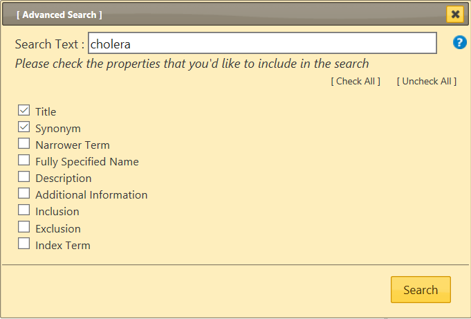

Advanced Search Help

Advanced search lets you search selected properties of the classification. You could search all properties or a selected subset only
Please provide keywords in the Search Text field and check the properties that you'd like to include in the search.
The system will search for the keywords in the properties that you've checked
The results are sorted by how good the text entered matches the phrase in ICD. It is also grouped by using the ICD hierarchy so that if the search text matches a parent category and several children, they will appear in a fashion that is easy to identify this relation visually. The list shows only the titles or the best match among the matched terms if the title is not a match. However, ▤ button will make more matching results visible under the entity.
If the search query hits more than 200 results, then only the top 200 will be displayed.
If you provide more than one keyword, the system will search for items that have all the keywords.
Wildcards: You may also use wildcard character *
For example, searching diabet* finds all entities that have a word that start with "diabet"
Search Results

After the search the results are displayed at the lower right area of the screen. Clicking on any result will load that entity
You may close the Advanced Search window or the Search Results pane by clicking the X at the top left corner of the window.